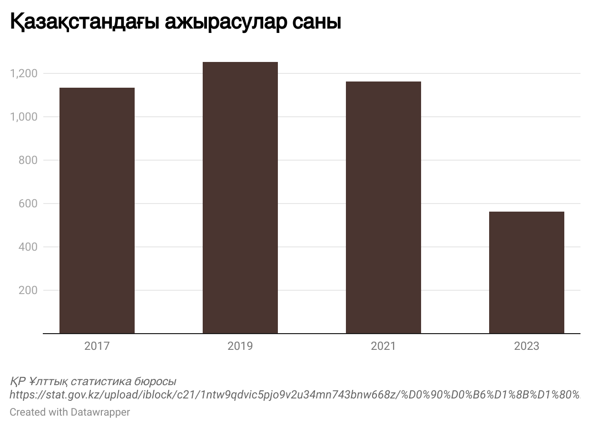

Қазақстандағы ажырасу статистикасы
Қоғам үшін ең өзекті мәселелердің бірі - ажырасу. Соңғы жылдары елімізде осы мәселе көпшілікті алаңдатып, түрлі таластар тудырғаны бәрімізге мәлім. Отбасы құндылықтарын бәрінен биік қойған қазақ қоғамы үшін ажырасудың көбеюі үлкен індетпен тең. Шынында да кейінгі кезде құндылықтар ауысып, жауапкершілік жоғалып, шаңырақ шайқалуы оп-оңай болып кетті. Неке бұзылуының дәл осындай жоғары деңгейге жетуіне себеп аз емес. Дегенмен ең жиі кездесетін себептерді атап өтуге болады. Олар мыналар:
- Тұрмыстық зорлық-зомбылық;
- Ер не әйелдің ішімдікке салынуы;
- Ер не әйелдің есірткіге салынуы;
- Ер не әйелдің құмар ойынға тәуелді болуы;
- Ер не әйелдің көзге шөп салуы;
- Ер не әйелдің туыстарының олардың ортасына түсуі;
- Қаржылық жағдайдың қиындауы.
Диаграмма

Ақпарат әлемінен алыс, сенімді мәліметтен хабардар емес адамдар ажырасудың өзінше статистикасын ұсынып жүр. ҚР Ұлттық статистика бюросының деректеріне жүгінсек, өткен жылы елімізде АХАТ органдары Қазақстан Республикасында 120,8 мың некені тіркеген. Бұл алдыңғы жылмен салыстырғанда 5,9% аз. Некенің сақталуына келер болсақ, олардың саны 2022 жылмен салыстырғанда 9,6% азайып, 40,2 мыңды құраған екен.